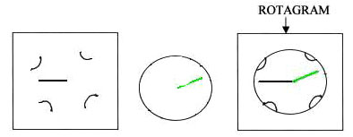
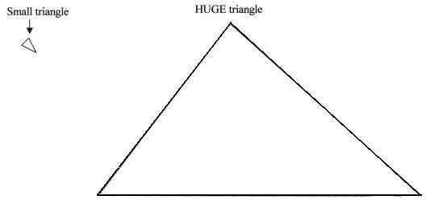
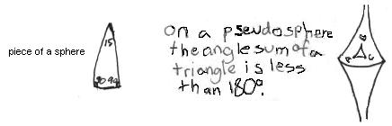

Anna, a 5th grader: "The sum of the angles of a triangle is not always 180o !"
Mr. Cohen told me that the number of degrees in a full turn or circle, is 360�. Then he asked me if I knew about the sum of the three angles in a triangle. I said no, so he told me: the sum of the three angles of a triangle are all the angles added together. He drew a triangle and gave me a rotagram to add the angles together. He gave me a quick lesson on how to add the angles with the rotagram. (The rotagram is made of 2 pieces of clear plastic- a square with a black line and cut in 4 places to hold the circular piece, which has a green line. When you put the 2 pieces together, you rotate the circular piece to get the angle on the rotagram equal to the angle on the paper).

After I added the angles of the triangle, I told him they added up to 180� (1/2 of a circle). He said the that the sum of the angles of any triangle is always 180�.
I did not believe him because I wondered what if one triangle is very, very huge and another triangle is very, very tiny? How can three angles so huge or three angles so small add up to 180�?

So I drew very small triangles and a huge one on the floor, on butcher paper. The angles all added up to 180�. Mr. Cohen thought it was good that I was questioning how this could always be true.
Mr. Cohen showed me a triangle on a globe and said its angles are 90�, 90� and 15�, which add up to 195�, because it's on a sphere and the sides are curved.

He also showed me page 128 in the book "Mathematics, The Science of Patterns" by Keith Devlin, a Scientific American Library book. There was the picture of a pseudosphere and on that the angle sum of a triangle is less than 180�.
He told me I was right: not all triangles equal 180�.
===============================================